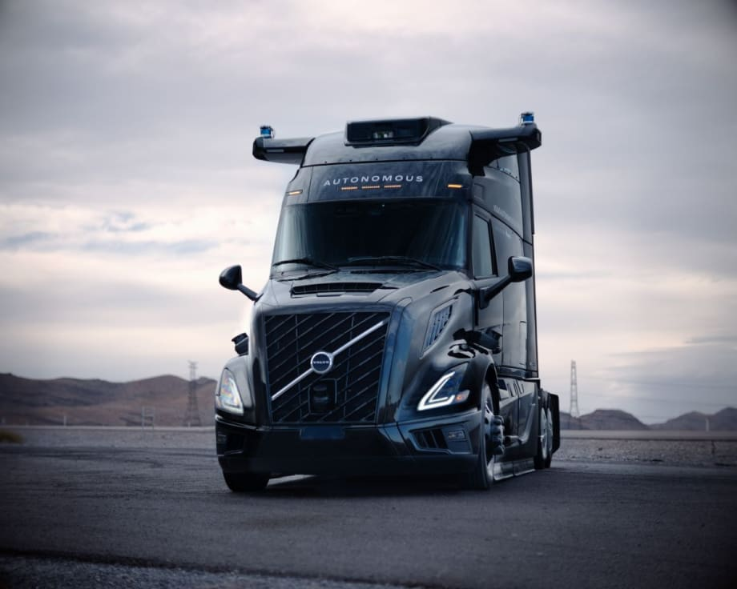

Aurora Innovationは商業向け自動運転トラッキング事業の急速な拡大を発表した。同社はフォートワースからエルパソへの2番目のドライバーレスルートを開設し、公道での走行距離が10万マイルを超えた。
Auroraは2026年に次世代Aurora Driverハードウェアを搭載した数百台のドライバーレストラックを展開する計画だ。CEO Chris Urmsonは次のように述べた：「ローンチから6か月が経ち、私たちは業界初の成果を次々と達成し、急速に拡大し、来年数百台のトラックを展開する道を切り開いています。」
フォートワース〜エルパソ間のルートは距離600マイル（約965km）で、同社の最初のダラス〜ヒューストン間回廊の開設からわずか6か月後に開設された。これは自動運転業界において最速の第2市場へのスケールを意味するとAuroraは主張する。このルートは長距離10時間の運行という特性上、通常ドライバーの配置が難しく、運送会社にとって課題を抱えるルートだった。
エルパソルートの現在の顧客にはHirschbach Motor Lines、Russell Transportなどが含まれる。Auroraは5台のドライバーレストラックが完璧な安全記録と定時配送実績を維持しながら定期的に貨物を輸送している。
Auroraは次世代ハードウェアを公開し、コストを半減しながら性能を向上させる設計となっている。主な特徴は以下の通りだ。
このハードウェアはFabrinetが製造する。2027年の量産に向け、さらに高いスケーラビリティを持つハードウェアがAUMOVIO（旧Continental）との共同開発で進められている。
Aurora Driverの共通アーキテクチャは複数のトラックプラットフォームにシームレスに統合される。Volvo VNL Autonomousへの統合は、VolvのバージニアNew River Valley製造施設で行われている。Volvo社長Nils Jaegerは次のようにコメントした：「自律走行に特化して製造されたトラックを製造することで、私たちはプロトタイプの域を超え、スケーラブルなソリューションを構築しています。」
International LT Series Class 8車両はAuroraのピッツバーグのハードウェア施設で作業が進んでいる。Paccarは引き続き自社施設で自律走行対応プラットフォームのテストを行っている。
International LTシリーズ車両の追加により、2026年に向けて顧客へのドライバーレス輸送能力が拡大する。Auroraはこの新フリートのテストを閉鎖試験場で開始した。安全ケースのドキュメント作成完了後、2026年Q2からオブザーバーパートナーなしでこれらのトラックを運行する計画だ。
Hirschbach社長兼CEOのRichard Stockingは次のようにコメントした：「早期採用者として、私たちは貨物技術の未来を定義する機会を歓迎しています。」